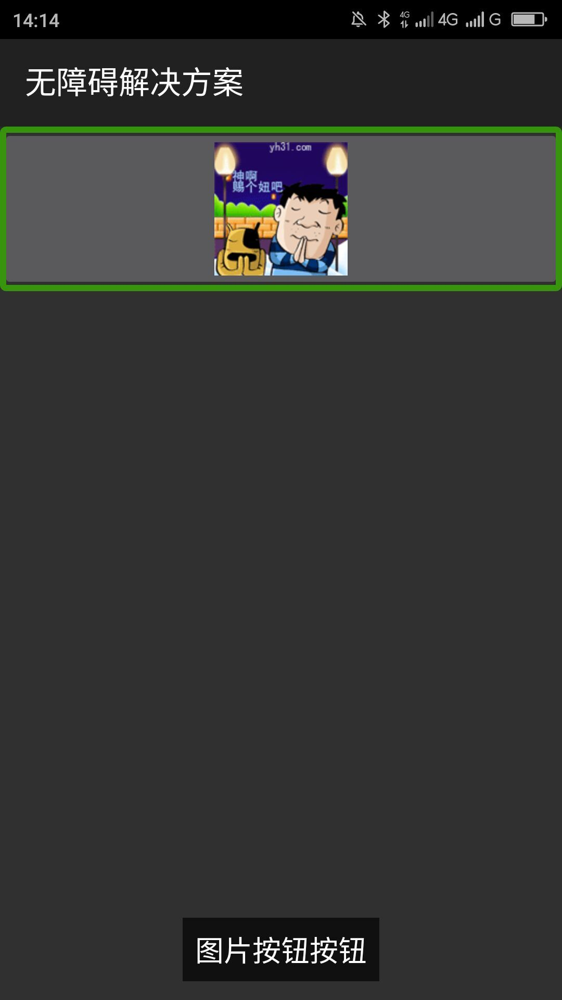
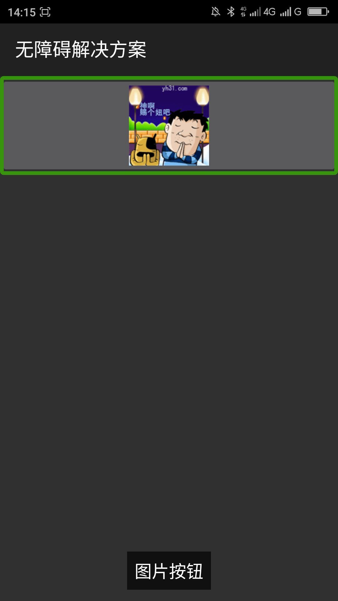

返回
在替代文本中添加了控件类型，控件类型会被朗读两遍，因为标准控件、实现了无障碍的自定义控件屏幕阅读器会自动识别控件类型。一般情况下屏幕阅读器先朗读替代文本，然后朗读屏幕阅读器识别到的控件类型，如果在替代文本中添加控件类型，控件类型就会被朗读两遍，给用户带来很不好的体验。
在替代文本中只添加对此控件的目的、功能等描述文本，不要在替代文本之中添加控件类型。
|  |  |
| 优化前，屏幕阅读器朗读“图片按钮按钮” | 优化后，屏幕阅读器朗读“图片按钮” |
对其他所有控件添加替代文本的时候都不要在替代文本之中添加控件类型